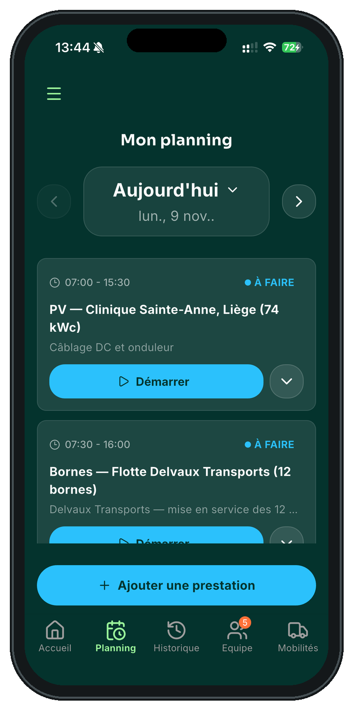
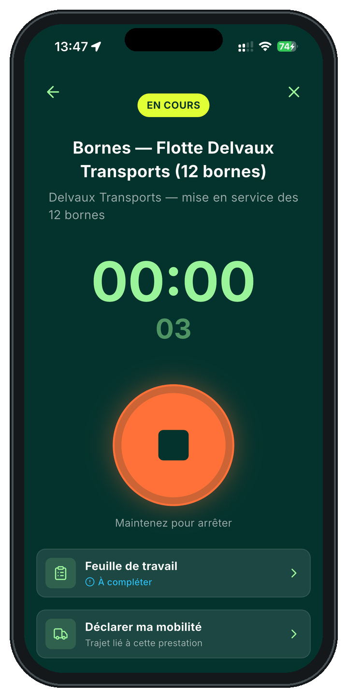
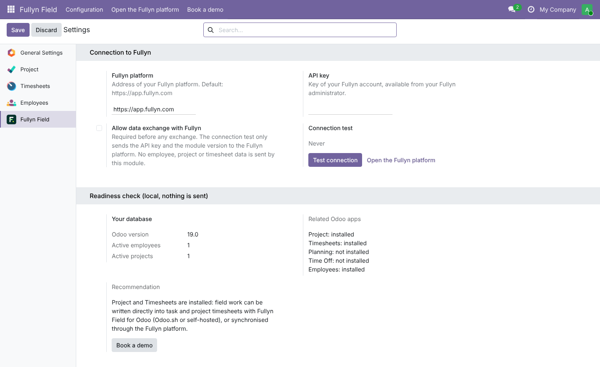

Fullyn Field is a Belgian software for companies with teams on the field: construction sites, installers, maintenance technicians, cleaning crews, gardeners. Workers record their day on their phone, team leaders validate it on site, the office closes the month, and the data goes to payroll and to Odoo without re-typing anything.
This free module is the connector: it links your Odoo database to your Fullyn Field account and checks whether your Odoo is ready for it.
Field Service · Planning · Timesheets · Pre-payroll · Checkinatwork · Check In and Out at Work (CIAO) · Mobility CP 124 / PC 124 · CP 149.01 / PC 149.01 · Time off · Kiosk time clock · Construction, installers, maintenance, cleaning, landscaping
Request a demo20-minute demo on one of your own sites, in French or Dutch.
Workers start and stop each job with one tap, declare their trips, request time off and add photos, videos or voice notes. It works offline. Team leaders can record time for their whole crew and validate it on site.
The office plans the work, follows the team in real time, corrects and validates hours, then closes the month. Each job is allocated to a project, a task and a sales order.
Validated hours, trips, time off and photos go to Odoo (timesheets, projects, sales), to the social secretariat for payroll, and to the accountant.
Real screens of the Fullyn mobile app (shown in French).

Today's planning. Each worker sees the jobs planned by the office and starts them with one tap.

Job in progress. The timer runs; hold to stop. From here: the worksheet and the CP 124 / CP 149.01 trip declaration.
External service: the Fullyn Field features described on this page are provided by Fullyn Field, a separate subscription from Fullyn SRL (Belgium). Without a Fullyn account, the menu, settings and readiness check still work. This module does not contain the Fullyn Field application itself.

This module in Odoo: connection settings and readiness check.
| Fullyn Field for Odoo | Fullyn Field through the Fullyn platform | |
|---|---|---|
| Where data goes | Directly into Odoo: task and project timesheets, mobility, pre-payroll data | Validated and closed in the Fullyn platform, then sent to Odoo and to the social secretariat by API |
| Odoo hosting | Odoo 19 or 20, on Odoo.sh or self-hosted | Any Odoo edition, other ERPs, or no ERP |
| Odoo apps used | Project, Timesheets, Planning, Time Off, Employees, Sales | |
The readiness check in this module tells you which option fits your database.
Nothing is sent until an administrator ticks Allow data exchange with Fullyn and clicks Test connection. The test only sends the API key and the module version to the platform address set in the settings. This module sends no employee, project or timesheet data. The readiness check runs inside your database.
Your data stays yours: what Fullyn Field validates is written back into your own tools.
Fullyn SRL, rue du Houmier 78, 4140 Sprimont, Belgium. info@fullyn.com
Dirty Hands. Clean Data.
Fullyn Field est un logiciel belge pour les entreprises qui ont des équipes sur le terrain : chantiers, installateurs, techniciens de maintenance, équipes de nettoyage, parcs et jardins. Les ouvriers encodent leur journée sur leur téléphone, le chef d'équipe valide sur place, le bureau clôture le mois, et tout part vers la paie et vers Odoo, sans rien ressaisir.
Ce que fait ce module dans Odoo : c'est le connecteur gratuit. Il ajoute un menu Fullyn Field, un écran de configuration (adresse de la plateforme, clé API), un test de connexion après accord explicite d'un administrateur, et un diagnostic local de votre base. Les fonctionnalités de Fullyn Field sont fournies par un abonnement distinct.
Demander une démo